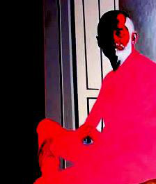

Biography
Background
Born Brooklyn, New York
Arizona resident since late 2005.
I have been drawing and painting as far back as I can remember but my primary career has been in music, as performer and teacher/administrator in music and art. Several private sales of paintings and drawings to individual patrons in Connecticut, Long Island, Minneapolis. (Approximately 1500 works so far)
Principal artistic activities
- Accepted in annual juried show, Art League of Long Island
- 3rd prize - drawing "Storm Door" 1968
- Classes at the Art Students League (figure drawing)
- Manhattan 1973-1976
- Study with Daniel Danétis at the American Center
- Paris, France 1971-72
- Exhibits in two shows : 5 paintings
- Set Design: Opera production "Hansel and Gretel".
- 3-act opera: 5 performances
- Peabody Conservatory of Music,
- Johns Hopkins University, 1985-6
- Also: Set design for traveling performances
- "Little Red Riding Hood" Peabody Opera Theatre 1986
- Life Drawing studio class, Arizona State University 2006-2007
- Resident Artist - AZDance Group
- (Kenda Newbury, Director) 2008-2009
- Drawing and sketching, cut paper at weekly rehearsals.
- Exhibit of paintings and drawings at Spring Concert 2009
Also: Art/Music 4-movement video Zaimont Suite -- built around my paintings and drawings primarily from 2007-2009, published widely on the Web in summer-fall 2009. Shown at New Music Festival - Indiana University of Pennsylvania, March 2010.
© 2026 Gary Zaimont | info@garyzaimont.com
| site by factor1